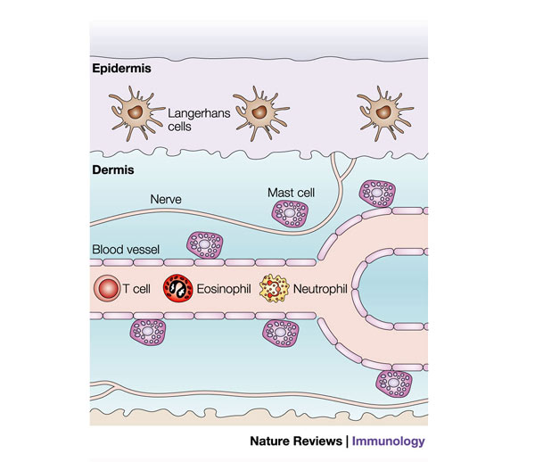
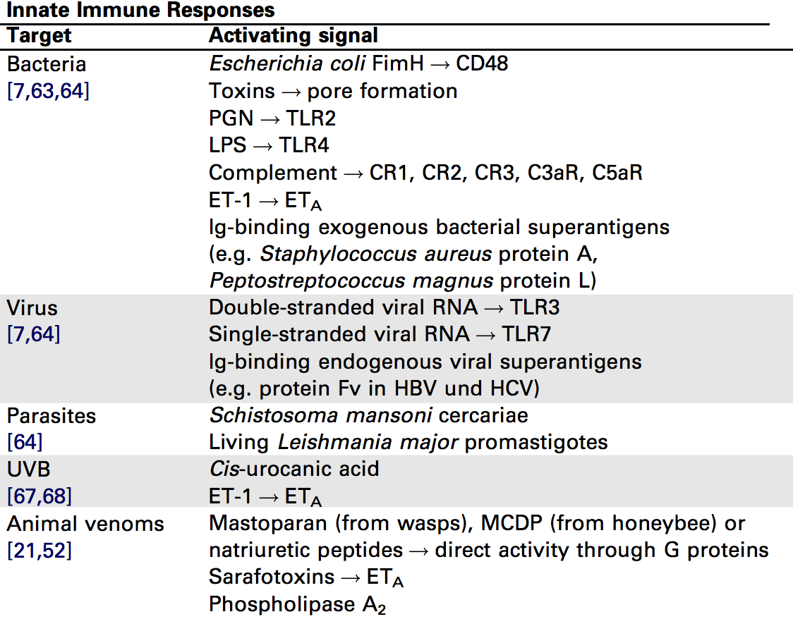
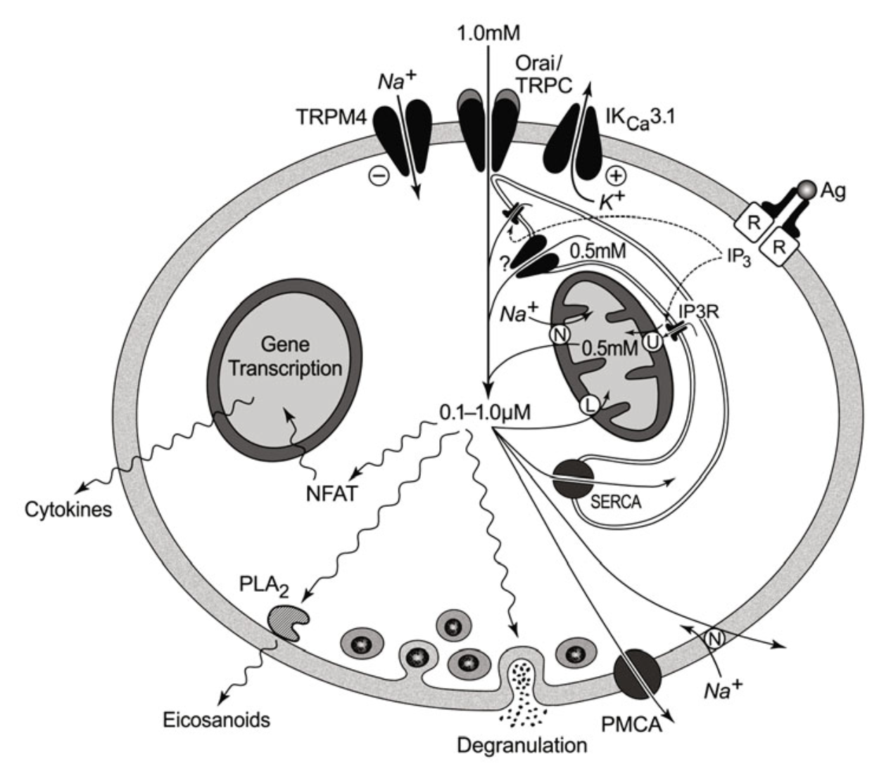
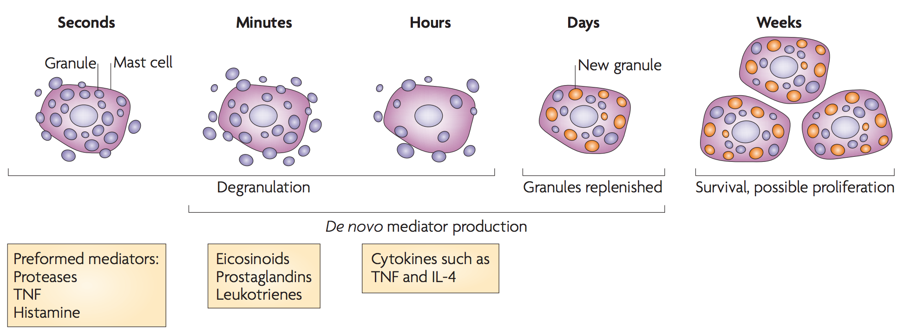
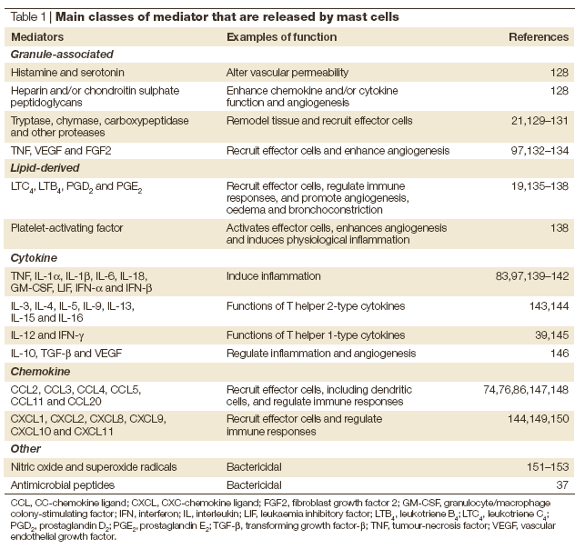
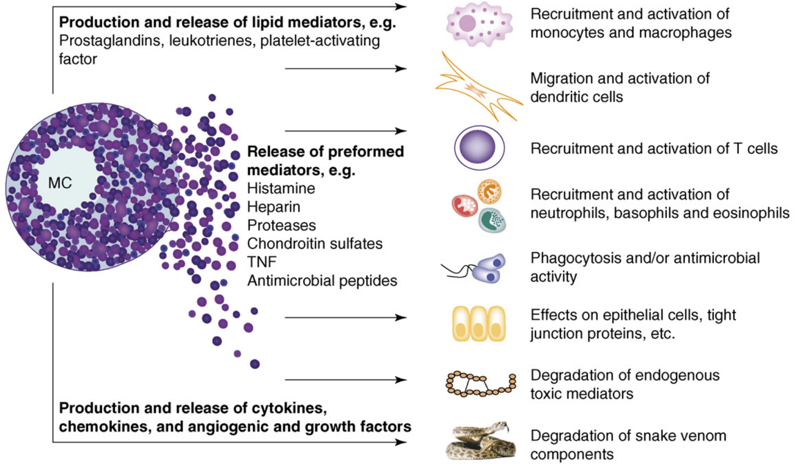
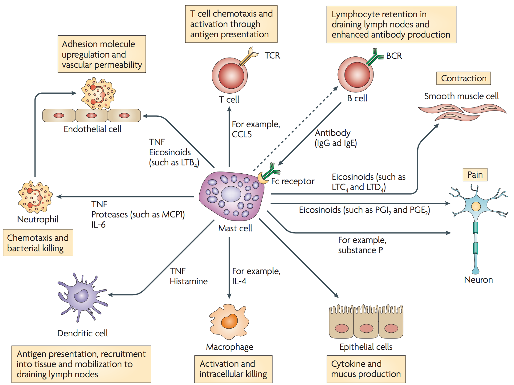
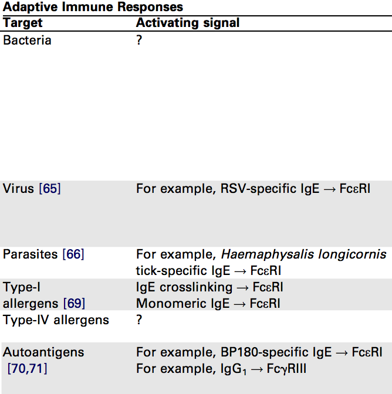
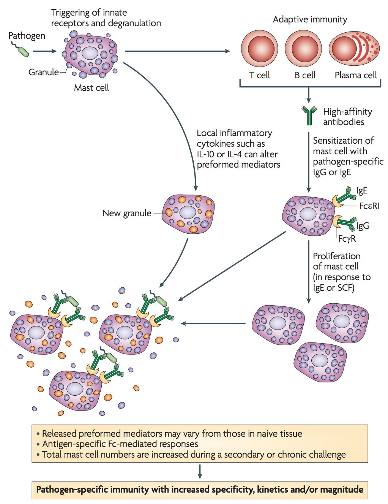

Mast Cells
Christopher Wetherill
TBMH 5054
Origins
- Originate in bone marrow
- Arise from CD34+/CD117+ pluripotent progenitor cells
- Cell maturation dependent on KIT activation
- KitW/W-v mice lacking surface expression of KIT show reduced levels of mature mast cells
- Long-lived cells; found in connective tissues
doi: 10.1007/978-1-4419-9533-9_1
Maturation
- Mast cell progenitors released into bloodstream
- Migrate to peripheral tissues
- Migration appears to be controlled in tissue-specific manner
- Terminially differentiate under influence of surrounding cytokines
- Mast cell longevity depends on continued presence of stem cell factor (SCF) for KIT activation
- Undergo apoptosis otherwise
doi: 10.1007/978-1-4419-9533-9_1
Mast Cell Progenitor Migration
- Under inflammatory conditions, mast cell progenitors are recruited from the blood via transendothelial migration
- Recruitment shown to be dependent on:
- VCAM-1 and MAdCAM-1 expression
- α4β1 and α4β7 integrins
- various chemokine receptors
- Also influenced by dendritic cells expressing the transcriptional regulatory protein T-bet
doi: 10.1073/pnas.0709651104
Strategic Location of Mast Cells

doi: 10.1038/nri1460
Function (in a nutshell)
- Have capacity to release various pro-inflammatory mediators
- Achieved via degranulation
- Through exocytosis, mast cell ejects cytoplasmic granules into extracellular space
- Granules rich in both histamine (causes smooth muscle contraction), proteases (both positive and detrimental documented effects)
(Metcalfe, 1997)
Mast Cells and Innate Immunity
- Initially known for role in pathogenic inflammatory conditions such as allergy
- Shown conclusively ca. 1996 that mast cells acted as a “first response” against bacterial infection
- Able to recognize pathogens via patern recognition receptors; toll-like receptors activated via PAMPs
doi: 10.1038/381075a0
Mast Cells and Innate Immunity

doi: 10.1016/j.it.2007.03.003
Mast Cell Signalling

doi: 10.1007/978-1-4419-9533-9_1
Degranulation: A Two-Stage Response

doi: 10.1038/nri2782
Main Classes of Mediators

doi: 10.1038/nri1460
Mast Cells and Innate Immunity

doi: 10.1016/j.it.2007.03.003
Mast Cells and Innate Immunity

doi: 10.1038/nri2782
Mast Cells and Adaptive Immunity

doi: 10.1016/j.it.2007.03.003
Mast Cells and Adaptive Immunity
- After stimulation, mast cells influence many cells involved in adaptive immunity
- Production of CCL20 likely recruits dendritic cell precursors
- Can directly modulate dendritic cell activation and antigen presentation
- May also recruit effector T cells to sites of infection
doi: 10.1038/nri2782
Mast Cells and Adaptive Immunity

doi: 10.1038/nri2782
Mast Cells and Vaccines
- The inclusion of mast cell activator compound 48/80 in vaccines can result in increased antigen-specific serum immunoglobulin G responses
- Likewise correlated with increased dendritic cell and lymphocyte recruitment to draining lymph nodes
- I.e., mast cells can be intentionally activated to enhance the host response to vaccines and ultimately confer a greater protective advantage
doi: 10.1038/nm1757
Final Thoughts
- Mast cells are likely essential for pathogen containment and clearance
- Orchestrate comples cellular migrations within tissues (and utilize this ability to bridge the gap between innate and adaptive immune response)
- More research must still be done to determine the influence of a prior infection on a mast cell's subsequent responses
- Can mast cell long-distance signalling inform rational vaccine design?